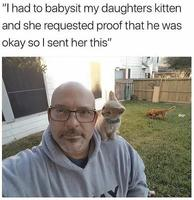

0

0
0


0

An anonymous reader shares a report: OpenAI CEO Sam Altman wrote in a memo to staff that he will draw the same red lines that sparked a high-stakes fight between rival Anthropic and the Pentagon: no AI for mass surveillance or autonomous lethal weapons. If other leading firms like Google follow suit, this could massively complicate the Pentagon's efforts to replace Anthropic's Claude, which was the first model integrated into the military's most sensitive work. It would also be the first time the nation's top AI leaders have taken a collective stand about how the U.S. government can and can't use their technology.
Altman made clear he still wants to strike a deal with the Pentagon that would allow ChatGPT to be used for sensitive military contexts. Despite the show of solidarity, such a deal could see OpenAI replace Anthropic if the Pentagon follows through with its plan to declare the latter a "supply chain risk."
Read more of this story at Slashdot.
theodp writes: On Tuesday, Microsoft GM of Education and Workforce Policy (and former Code.org Chief Academic Officer) Pat Yongpradit posted an obituary of sorts for coders. "Computer programmers and software developers are codified differently in the BLS [Bureau of Labor Statistics] data," Yongpradit wrote. "The modern AI-infused world needs less computer programmers (coders) and more software developers (more holistic and higher level). So when folks say that there is less hiring of computer programmers, they are right. But there will be more hiring of software developers, especially those who have adopted an AI-forward mindset and skillset. [...] The number of just pure computer programming roles has already been declining due to reasons like outsourcing, AI will just accelerate the decline."
On Wednesday, Yongpradit's colleague Allyson Knox, Senior Director of Education and Workforce Policy at Microsoft, put another AI nail in the coder coffin, testifying before the House Committee on Education -- the Workforce Subcommittee on Early Childhood, Elementary, and Secondary Education on Building an AI-ready America: Teaching in the Age of AI. "Thank you to Chairman Tim Walberg, Ranking Member Bobby Scott, Chair Kevin Kiley, Ranking Member Suzanne Bonamici and members of the Subcommittee for the opportunity to share Microsoft perspective and that of the educators and parents we hear from every day across the country," Knox wrote in a LinkedIn post.
"Three themes continue to emerge throughout these discussions: 1. Educators want support to build AI literacy and critical thinking skills. 2. Schools need guidance and guardrails to ensure student data is protected and adults remain in control. 3. Teachers want classroom-ready tools, and a voice in shaping them. If we focus on these priorities, we can help ensure AI expands opportunity for every student across the United States."
Yongpradit and Knox report up to Microsoft President Brad Smith, who last July told Code.org CEO Hadi Partovi it was time for the tech-backed nonprofit to "switch hats" from coding to AI as Microsoft announced a new $4 billion initiative to advance AI education. Smith's thoughts on the extraordinary promise of AI in education were cited by Knox in her 2026 Congressional testimony. Interestingly, Knox argued for the importance of computer programming literacy in her 2013 Congressional testimony at a hearing on Our Nation of Builders: Training the Builders of the Future. "Congress needs to come up with fresh ideas on how we can continue to train the next generation of builders, programmers, manufacturers, technicians and entrepreneurs," said Rep. Lee Terry said to open the discussion. So, are reports of computer programming's imminent death greatly exaggerated?
Read more of this story at Slashdot.
Bright Data, a company that operates one of the world's largest residential proxy networks, has been running an SDK inside smart TV apps that turns those devices into nodes for web crawling -- collecting data used by AI companies, among other clients -- and most consumers have had no idea it was happening.
The company has published more than 200 first-party apps to LG's app store alone and still lists Samsung's Tizen OS and LG's webOS as supported platforms, though LG says the SDK is "not officially supported" and its operation on webOS "is not guaranteed." Google, Amazon, and Roku have all since adopted policies restricting or banning background proxy SDKs, and Bright Data no longer supports those platforms.
Several Roku apps still running the SDK disappeared from the store after a journalist with The Verge behind this reporting contacted the company.
Read more of this story at Slashdot.
OpenAI has closed what is now the largest private financing in history -- a $110 billion round at a $730 billion pre-money valuation that more than doubles the $40 billion raise it completed just a year ago, itself a record for a private tech company at the time.
Amazon invested $50 billion, SoftBank put in $30 billion, and Nvidia committed $30 billion, and additional investors are expected to join as the round progresses. The valuation is a sharp jump from the $500 billion OpenAI commanded in a secondary financing in October, and the round dwarfs recent raises by rivals Anthropic ($30 billion) and xAI ($20 billion).
The company has been telling investors it is now targeting roughly $600 billion in total compute spend by 2030, a more measured figure than the $1.4 trillion in infrastructure commitments CEO Sam Altman had touted months earlier. OpenAI is projecting more than $280 billion in total revenue by 2030, split roughly equally between consumer and enterprise. ChatGPT now has over 900 million weekly active users and more than 50 million paying subscribers.
Read more of this story at Slashdot.
Longtime Slashdot reader ArchieBunker shares a report from NBC News: NASA revealed that astronaut Mike Fincke was the crew member who suffered a medical incident at the International Space Station in January, which prompted the agency to carry out the first evacuation due to a medical issue in the space station's 25-year history. The rare decision to cut a mission short and bring Fincke and three other crew members home early made for a dramatic week in space early this year.
In a statement released by NASA "at the request of Fincke," the veteran astronaut said he experienced a medical event on Jan. 7 "that required immediate attention" from his space station crew members. "Thanks to their quick response and the guidance of our NASA flight surgeons, my status quickly stabilized," Fincke, 58, said in the statement. [...] In his statement, Fincke thanked his Crew-11 colleagues, along with NASA astronaut Chris Williams and Russian cosmonauts Sergey Kud-Sverchkov and Sergei Mikaev, who were also aboard the space station at the time and are still in space. Fincke also thanked the teams at NASA, SpaceX and the medical professionals at Scripps Memorial Hospital La Jolla. "Their professionalism and dedication ensured a positive outcome," he said.
Fincke ended his statement by saying he is "doing very well" and still actively involved with standard post-flight reconditioning at NASA's Johnson Space Center in Houston. "Spaceflight is an incredible privilege, and sometimes it reminds us just how human we are," he said. "Thank you for all your support."
Read more of this story at Slashdot.
An anonymous reader quotes a report from the Associated Press: Anthropic CEO Dario Amodei said Thursday the artificial intelligence company "cannot in good conscience accede" to the Pentagon's demands to allow wider use of its technology. The maker of the AI chatbot Claude said in a statement that it's not walking away from negotiations, but that new contract language received from the Defense Department "made virtually no progress on preventing Claude's use for mass surveillance of Americans or in fully autonomous weapons."
The Pentagon's top spokesman has reiterated that the military wants to use Anthropic's artificial intelligence technology in legal ways and will not let the company dictate any limits ahead of a Friday deadline to agree to its demands. Sean Parnell said Thursday on social media that the Pentagon "has no interest in using AI to conduct mass surveillance of Americans (which is illegal) nor do we want to use AI to develop autonomous weapons that operate without human involvement."
Anthropic's policies prevent its models, such as its chatbot Claude, from being used for those purposes. It's the last of its peers -- the Pentagon also has contracts with Google, OpenAI and Elon Musk's xAI -- to not supply its technology to a new U.S. military internal network. Parnell said the Pentagon wants to "use Anthropic's model for all lawful purposes" but didn't offer details on what that entailed. He said opening up use of the technology would prevent the company from "jeopardizing critical military operations." "We will not let ANY company dictate the terms regarding how we make operational decisions," he said. In a post on X, Parnell said Anthropic will "have until 5:01 PM ET on Friday to decide. Otherwise, we will terminate our partnership with Anthropic and deem them a supply chain risk for DOW."
Read more of this story at Slashdot.
A Greek court has convicted four individuals linked to the marketing of Predator spyware in the wiretapping scandal that shook the country in 2022. The BBC reports: In what became known as "Greece's Watergate," surveillance software called Predator was used to target 87 people -- among them government ministers, senior military officials and journalists. The four who had marketed the software were found guilty by an Athens court of misdemeanours of violating the confidentiality of telephone communications and illegally accessing personal data and conversations.
The court sentenced the four defendants to lengthy jail sentences, suspended pending appeal. Although they each face 126 years, only eight would be typically served which is the upper limit for misdemeanors. One in three of the dozens of figures targeted had also been under legal surveillance by Greece's intelligence services (EYP). Prime Minister Kyriakos Mitsotakis, who had placed EYP directly under his supervision, called it a scandal, but no government officials have been charged in court and critics accuse the government of trying to cover up the truth.
The case dates back to the summer of 2022, when the current head of Greek Socialist party Pasok, Nikos Androulakis - then an MEP - was informed by the European Parliament's IT experts that he had received a malicious text message containing a link. Predator spyware, marketed by the Athens-based Israeli company Intellexa, can get access to a device's messages, camera, and microphone. Its use was illegal in Greece at that time but a new law passed in 2022 has since legalised state security use of surveillance software under strict conditions. Androulakis also discovered that he had been tracked for "national security reasons" by Greece's intelligence services. The scandal has since escalated into a debate over democratic accountability in Greece.
Read more of this story at Slashdot.
Colorado lawmakers are proposing SB26-051, a bill that would require operating systems to register a user's age bracket and share it with apps via an API. PCMag reports: The bill comes from state Sen. Matt Ball and Rep. Amy Paschal, both Democrats. "The intent is to create thoughtful safeguards for kids online through a privacy-forward framework for age assurance," Ball told PCMag. "Unlike some laws in other states, SB 51 doesn't require users to share personally identifiable information or use facial recognition technology."
The legislation also promises to centralize the age check through the OS, rather than mandating that each app enforce their own age-verification mechanism, which can involve scanning the user's official ID, thus raising privacy and security concerns. The bill also forbids the sharing of the age-bracket data for any other purpose. But it looks like it's easy to bypass the age check proposed by SB26-051. The legislation itself doesn't mention any state ID check to verify the owner's age. In addition, the bill doesn't seem to cover websites, only apps and app stores. The report notes that the legislation was based on California's bill AB 1043, which was passed last year and expected to take effect January 1, 2027.
Read more of this story at Slashdot.
Google has launched Nano Banana 2 (Gemini 3.1 Flash Image), a faster, more realistic image generation model that becomes the default across Gemini, Search, Lens, and Flow. TechCrunch reports: The new Nano Banana 2 retains some of the high-fidelity characteristics of the Pro model but produces images faster. The company says you can create images with a resolution ranging from 512px to 4K, in different aspect ratios. Nano Banana 2 can maintain character consistency for up to five characters and fidelity of up to 14 objects in one workflow for better storytelling. Users can also issue complex requests with detailed nuances for image generation, Google says. In addition, users can create media with more vibrant lighting, richer textures, and sharper detail.
[...] On Google's higher-end plans, Google AI Pro and Ultra, subscribers can continue to use Nano Banana Pro for specialized tasks by regenerating images via the three-dot menu. [...] The company said that all images created through the new model will have a SynthID watermark, which is Google's mark to denote AI-generated images. The images are also interoperable with C2PA Content Credentials, created by an industry body consisting of companies like Adobe, Microsoft, Google, OpenAI, and Meta. Google said that since launching the SynthID verification in the Gemini app in November, people have used it over 20 million times.
Read more of this story at Slashdot.
An anonymous reader quotes a report from The Register: Ballooning memory prices are forecast to kill off entry-level PCs, leading to a decline in global shipments this year -- and a similar effect is going to hit smartphones. Analyst biz Gartner is projecting a drop in PC shipments of more than 10 percent during 2026, and a decline of around 8 percent for smartphones, all due to the AI-driven memory shortage. Some types of memory have doubled or quadrupled in price since last year, and Gartner believes DRAM and NAND flash used in PCs and phones is set for a further 130 percent rise by the end of 2026.
The upshot of this is that the budget PC will disappear, simply because vendors won't be able to build them at a price that will satisfy cost-conscious buyers, according to Gartner research director Ranjit Atwal. "Because the price of memory is increasing so much, vendors lose the ability to provide entry-level PCs -- those below about $500," he told The Register. PC makers could just raise the price of their cheap and cheerful boxes to above that level to compensate for the memory hike, however, price-sensitive buyers simply won't bite, he added.
Another factor expected to add to declining fortunes of the PC industry this year is AI devices -- systems equipped with special hardware for accelerating AI tasks, typically via a neural processing unit (NPU) embedded in the CPU. These systems were predicted to take the market by storm, but they require more memory to support AI processing and vendors like to mark them up to a premium price. "Historically, downgrading specifications was the way to go when prices were being squeezed, but that's difficult here," Atwal said. "The thinking was that the average price [of AI PCs] would fall this year, and lead to more adoption," said Atwal, "but that's not happening." The lack of killer applications isn't helping either.
Read more of this story at Slashdot.
Jack Dorsey's Block is cutting more than 4,000 jobs, or nearly half its workforce, as part of a deliberate shift toward becoming a smaller, "intelligence-native" company built around AI. The Verge reports: "We're not making this decision because we're in trouble," Dorsey says. "Our business is strong. Gross profit continues to grow, we continue to serve more and more customers, and profitability is improving. But something has changed. We're already seeing that the intelligence tools we're creating and using, paired with smaller and flatter teams, are enabling a new way of working which fundamentally changes what it means to build and run a company. And that's accelerating rapidly."
Dorsey opted to do a big layoff instead of gradual cuts because "I'd rather take a hard, clear action now and build from a position we believe in than manage a slow reduction of people toward the same outcome." The layoffs were announced on Thursday as part of the company's Q4 2025 earnings. In a shareholder letter (PDF), Dorsey says that "We believe Block will be significantly more valuable as a smaller, faster, intelligence-native company. Everything we do from here is in service of that."
Read more of this story at Slashdot.
An anonymous reader quotes a report from 404 Media: There's a new agentic AI called Einstein that will, according to its developers, live the life of a student for them. Einstein's website claims that the AI will attend lectures for you, write your papers, and even log into EdTech platforms like Canvas to take tests and participate in discussions. Educators told me that Einstein is just one of many AI tools that can do homework for students, but should be seen as a warning to schools that are increasingly seen by students as a place to gain a diploma and status as opposed to the value of education itself.
If an AI can go to school for you what's the point of going to school? For Advait Paliwal, Brown dropout and co-creator of Einstein, there isn't one. "I think about horses," he said. "They used to pull carriages, but when cars came around, I'd argue horses became a lot more free," he said. "They can do whatever they want now. It would be weird if horses revolted and said 'no, I want to pull carriages, this is my purpose in life.'" But humans aren't horses. "This is much bigger than Einstein," Matthew Kirschenbaum told 404 Media. "Einstein is symptomatic. I doubt we'll be talking about Einstein, as such, in a year. But it's symptomatic of what's about to descend on higher ed and secondary ed as well."
[...] The attractiveness of agentic AIs is a symptom of a decades-long trend in higher education. "Universitiesby and large adopted a transactive model of education," Kirschenbaum said. "Students see their diploma as a credential. They pay tuition and at the end of four years, sometimes five years, they receive the credential and, in theory at least, that is then the springboard to economic stability and prosperity." Paliwal seems to agree. He told 404 Media that he attempted to change the university from the inside while working as a TA, but felt stymied by politics. "The only way to force these institutions to evolve is to bring reality to their face. And usually the loudest critics are the ones who can't do their own job well and live in fear of automation," he said. "I think we really need to question what learning even is and whether traditional educational institutions are actually helping or harming us," said Paliwal. "We're seeing a rise in unemployment across degree holders because of AI, and that makes me question whether this is really what humans are born to do. We've been brainwashed as a society into valuing ourselves by the output of our productive work, and I think humanity is a lot more beautiful than that. Is it really education if we're just memorizing things to perform a task well?"
Kirschenbaum added: "What we're finding is that if forms of education can be transacted then we've just about arrived at the point where autonomous software AI agents are capable of performing the transaction on your behalf," he said. "And so the whole educational paradigm has come back to essentially bite itself in the ass."
Read more of this story at Slashdot.
Netflix is walking away from a deal to buy Warner Bros. Discovery's studio and streaming assets after the WBD board on Thursday deemed a revised bid by Paramount Skydance to be a superior offer. From a report: Earlier this week, Paramount raised its bid to buy the entirety of WBD to $31 per share, up from $30 per share, all cash. It was the latest amendment to Paramount's multiple offers in recent months -- and since moving forward with a hostile bid to buy the company -- and it's now unseated a deal between WBD and Netflix to sell the legacy media company's studio and streaming businesses for $27.75 per share.
Last week, Netflix granted WBD a seven-day waiver to reengage with Paramount, resulting in the higher bid. Paramount's offer is for the entirety of WBD, including its pay-TV networks, such as CNN, TBS and TNT. Netflix had four business days to make changes to its own proposal in light of Paramount's superior bid, the WBD board said in a statement Thursday. Instead, the decision by the streaming giant to walk away puts a pin in a drawn-out saga that saw amended offers from both bidders.
Read more of this story at Slashdot.
sciencehabit quotes a report from Science Magazine: For decades, planetary scientists have pored over a mystery hidden within the Moon rocks retrieved by Apollo astronauts in the 1960s and '70s. Minerals in the rocks record the imprint of a magnetic field, nearly as powerful as Earth's, that existed more than 3.5 billion years ago and seemed to persist for millions of years. But generating a magnetic field requires a dynamo -- a churning, molten core -- and most researchers believed the Moon's tiny core would have long since cooled off, 1 billion years after it formed. Corroborating that picture are other ancient Moon rocks of about the same age that suggest the field was weak -- leaving planetary scientists baffled.
Now, researchers are proposing a new way to solve the puzzle. A paper published today in Nature Geoscience theorizes that between 3.5 billion and 4 billion years ago, blobs of titanium-rich magma melted episodically just above the core, rising in plumes that drove volcanic eruptions on the surface. By intermittently stirring up the Moon's core, these bouts of melting would have caused the Moon's magnetic field to flicker on in short, powerful bursts. The paper "links a few different concepts that people were thinking about separately, but hadn't actually brought together," says Sonia Tikoo, a planetary geophysicist at Stanford University who was not involved in the study.
Read more of this story at Slashdot.
New submitter sabbede shares a report from CNN Politics: A sprawling Chinese influence operation -- accidentally revealed by a Chinese law enforcement official's use of ChatGPT -- focused on intimidating Chinese dissidents abroad, including by impersonating US immigration officials, according to a new report from ChatGPT-maker OpenAI. The Chinese law enforcement official used ChatGPT like a diary to document the alleged covert campaign of suppression, OpenAI said. In one instance, Chinese operators allegedly disguised themselves as US immigration officials to warn a US-based Chinese dissident that their public statements had supposedly broken the law, according to the ChatGPT user. In another case, they describe an effort to use forged documents from a US county court to try to get a Chinese dissident's social media account taken down. "This is what Chinese modern transnational repression looks like," Ben Nimmo, principal investigator at OpenAI, told reporters ahead of the report's release. "It's not just digital. It's not just about trolling. It's industrialized. It's about trying to hit critics of the CCP [Chinese Communist Party] with everything, everywhere, all at once."
Michael Horowitz, a former Pentagon official focused on emerging technologies, said the report from OpenAI "clearly demonstrates the way that China is actively employing AI tools to enhance information operations. US-China AI competition is continuing to intensify. This competition is not just taking place at the frontier, but in how China's government is planning and implementing the day-to-day of their surveillance and information apparatus."
Read more of this story at Slashdot.
Jagmeet Singh / TechCrunch : India-based Ultrahuman launches the $479 Ring Pro, available for pre-order globally, excluding the US, after the ITC ruled in favor of Oura in a patent dispute — Ultrahuman on Friday unveiled a new smart ring with longer battery life and a redesigned form factor, as the Bengaluru-based wearable maker seeks …
Allie Garfinkle / Fortune : Flux, which offers an AI-powered platform to design PCBs for electronic devices, raised $37M, including a $27M Series B led by 8VC and a $10M Series A — Senior Finance Reporter And Author Of Term Sheet — In 2018, Matthias Wagner was leading a 100-person Burning Man camp called Hotel California.
Christine Wang / Axios : TMTG says it is in talks to spin off Truth Social into a public company, following the close of its previously announced merger with nuclear fusion startup TAE — Trump Media & Technology Group said Friday it is in talks to spin off Truth Social into a new publicly traded company.
Reuters : TikTok returns to Albania after a year-long ban, ostensibly linked to the death of a teenage boy, expired; Albania says TikTok has tightened safety measures — Social media platform TikTok is back in Albania after a year-long ban expired this month, in a case illustrating the complexity …
Jagmeet Singh / TechCrunch : Deepinder Goyal, who stepped down as Zomato's CEO, raised $54M at a $190M valuation for Temple, which aims to make high-performance wearables for elite athletes — Weeks after stepping down as CEO from food delivery service Zomato and its parent Eternal, Indian entrepreneur Deepinder Goyal …
OpenAI : OpenAI says ChatGPT has 900M+ weekly active users, 50M+ consumer subscribers, and weekly Codex users have more than tripled since the start of the year to 1.6M — AI demand is surging across consumers, developers, and businesses. Meeting that demand and providing everyone access …
Axios : Sam Altman says OpenAI shares Anthropic's red lines with respect to AI use by the military, which are “an issue for the whole industry” — OpenAI CEO Sam Altman wrote in a memo to staff that he will draw the same red lines that sparked a high-stakes fight between rival Anthropic …
Wall Street Journal : Sources: multiple federal agencies raised concerns about Grok's safety and reliability in recent months, before DOD approved Grok for use in classified settings — Warnings about xAI's safety and reliability preceded Pentagon decision to approve Grok for use in classified settings.
About Amazon : Amazon will invest $15B in OpenAI initially, followed by $35B if certain conditions are met; OpenAI commits to consuming ~2 GW of Trainium capacity through AWS — Amazon Web Services (AWS) and OpenAI will co-create a Stateful Runtime Environment powered by OpenAI models …
Keach Hagey / Wall Street Journal : Note to staff: Sam Altman says OpenAI seeks a DOD deal, except for use cases like domestic surveillance, and wants to “help de-escalate” DOD-Anthropic fight — Anthropic has spent weeks at odds with the Pentagon over the scope of how its Claude AI tools can be used
CNBC : OpenAI raised $110B at a $730B pre-money valuation, up from $500B in a secondary financing in Oct.; Amazon invested $50B, Nvidia and SoftBank invested $30B each — OpenAI announced a $110 billion funding round on Friday, a financing that's more than double the size of its last raise a year ago …
Washington Post : Sources detail how the standoff between the Pentagon and Anthropic escalated after discussions about using Claude during hypothetical nuclear missile attacks — Start-up Anthropic and the U.S. military are careening toward a clash over government use of artificial intelligence — and whether it should be allowed to kill.
Elizabeth Howcroft / Reuters : Tether says it has frozen $4.2B of its crypto token over links to “illicit activity”, including $3.5B since 2023 and $61M linked to pig-butchering scams — El Salvador-based stablecoin issuer Tether said it has frozen about $4.2 billion of its crypto tokens over links to …
Bill Toulas / BleepingComputer : French e-commerce marketplace ManoMano notifies its customers of a data breach affecting 38M; the company said the incident involved a third party subcontractor — DIY store chain ManoMano is notifying customers of a data breach that was caused by hackers compromising a third-party service provider.
Bloomberg : Equinix and Canada Pension Plan Investment Board agree to acquire atNorth Holding, a pan-Nordic data center operator, valuing atNorth at $4B including debt — Canada Pension Plan Investment Board and Equinix Inc. have agreed to acquire atNorth Holding AB, a pan-Nordic data center operator owned by Partners Group Holding AG.